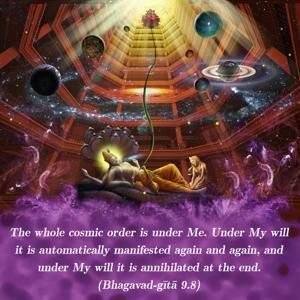
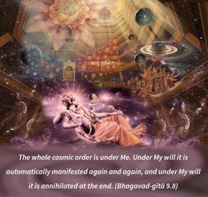
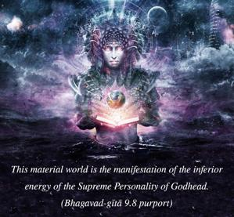
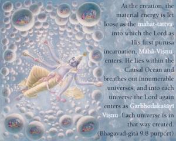
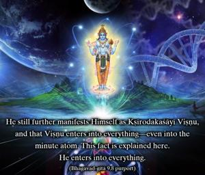
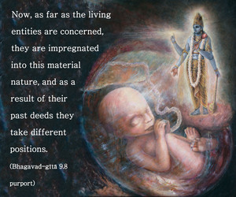

The whole cosmic order is under Me. Under My will it is automatically manifested again and again, and under My will it is annihilated at the end.






This material world is the manifestation of the inferior energy of the Supreme Personality of Godhead. This has already been explained several times. At the creation, the material energy is let loose as the mahat-tattva, into which the Lord as His first puruṣa incarnation, Mahā-viṣṇu, enters. He lies within the Causal Ocean and breathes out innumerable universes, and into each universe the Lord again enters as Garbhodaka-śāyī Viṣṇu. Each universe is in that way created. He still further manifests Himself as Kṣīrodaka-śāyī Viṣṇu, and that Viṣṇu enters into everything – even into the minute atom. This fact is explained here. He enters into everything.
Now, as far as the living entities are concerned, they are impregnated into this material nature, and as a result of their past deeds they take different positions. Thus the activities of this material world begin. The activities of the different species of living beings are begun from the very moment of the creation. It is not that all is evolved. The different species of life are created immediately along with the universe. Men, animals, beasts, birds – everything is simultaneously created, because whatever desires the living entities had at the last annihilation are again manifested. It is clearly indicated here by the word avaśam that the living entities have nothing to do with this process. The state of being in their past life in the past creation is simply manifested again, and all this is done simply by His will. This is the inconceivable potency of the Supreme Personality of God. And after creating different species of life, He has no connection with them. The creation takes place to accommodate the inclinations of the various living entities, and so the Lord does not become involved with it.